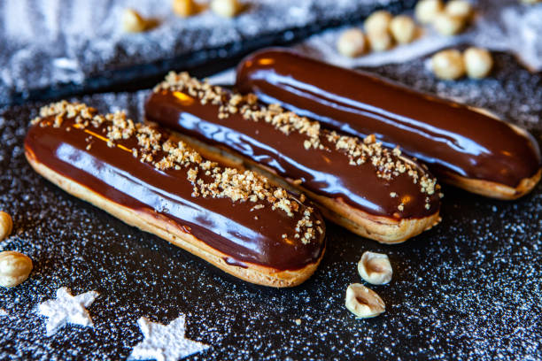

Must-Try French Pastries

Croissant
The most iconic of French pastries — a buttery, flaky, crescent-shaped viennoiserie made from laminated dough. Best enjoyed warm from the oven at a Parisian café, with nothing but a café au lait alongside.

Macaron
A delicate French confection made from almond flour meringue shells sandwiched with ganache, buttercream, or jam. Perfected by the great Parisian houses like Ladurée, macarons come in an endless rainbow of flavors.

Éclair
An elongated choux pastry filled with cream and glazed with chocolate or coffee icing. A staple of the French pâtisserie window, the éclair is one of the most beloved pastries in the French repertoire.

Mille-Feuille
Three layers of crispy puff pastry stacked with rich pastry cream and glazed with a signature fondant icing. Its name means "a thousand leaves," a testament to the intricate layers within each slice.

Paris-Brest
A wheel-shaped choux pastry filled with a rich praline cream, created in 1910 to celebrate the Paris-Brest-Paris bicycle race. Its round shape was designed to evoke a bicycle wheel — and it remains a pâtisserie classic.

Tarte Tatin
An upside-down caramelized apple tart, accidentally invented by the Tatin sisters in the Loire Valley in the late 19th century. Golden, buttery, and deeply caramelized — best served warm with a spoonful of crème fraîche.